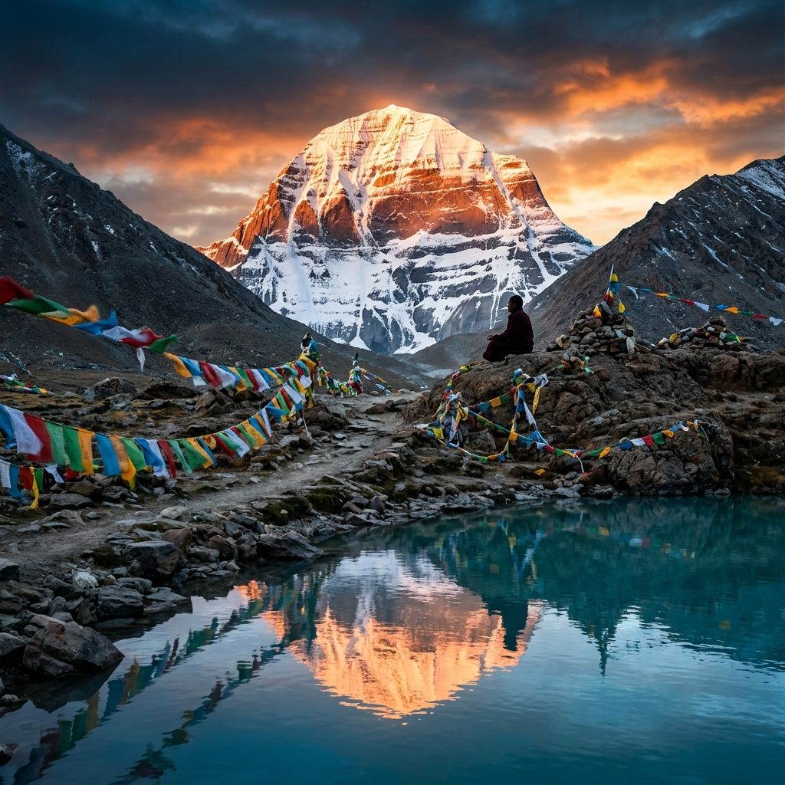
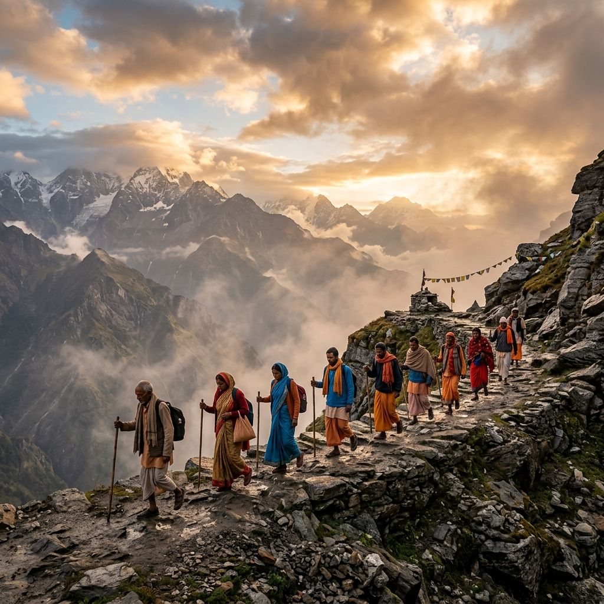

Why Pilgrimage?
Sadhguru: What is the difference between travel, a journey and a pilgrimage? People move from one place to another for a variety of reasons. There are explorers who are always looking for virgin land that they want to put their footprint on. They want to prove something. There are travelers who are curious to see everything, so they travel. There are tourists who just go to relax. There are other kinds of tourists who just go to escape from their work or family.
But a pilgrim is not going for any of these purposes. A pilgrimage is not a conquest, it is a surrender. It is a way of getting yourself out of the way. If you do not budge, it is a way of wearing yourself out. A process of destroying all that is limited and compulsive and arriving to a boundless state of consciousness.

Subduing Who You Are
The very idea behind a pilgrimage is fundamentally to subdue the sense of who you are. It is to become nothing in the process of just walking and climbing and subjecting yourself to various arduous processes of nature.
In the ancient past, to get to such places, a person had to go through a certain amount of physical, mental, and every kind of hardship, so that he becomes less than who he thinks he is right now.
Physically, we are much weaker human beings than what they used to be a thousand years ago. We have used comforts to make ourselves weaker. So the fundamental idea of pilgrimage becomes all the more relevant to modern societies.
Hardship is not necessary but most people are unwilling to dissolve, so you have to wear them down. We must have the sense to understand that the sense of who you are should go down.
Isha Sacred Walks are journeys to places of divine connection, where the veil between the physical and spiritual is thin. Such sacred spaces revitalize and energize us.
Such sacred spaces give us an experience of our inner nature, revitalizing and energizing us from within, offering a glimpse of the boundless.
In Sadhguru’s Own Words
Sadhguru looks at the significance and purpose behind making a journey to a sacred space.
A pilgrimage is not a conquest, it is a surrender. A trek or a mountaineering feat is always about achievement, to make yourself bigger than who you are. But a pilgrimage is about dissolution, to subdue yourself and become nothing, No-thing.
Make Your Life a Pilgrimage
“If you have a working head, you would make your life into a pilgrimage. If your life is not a constant process of reaching for something higher than where you are right now, what kind of life is that? If this life is not constantly longing for something higher than what it is, that is not much of a life. If you are aspiring and working towards something higher, then your life is a pilgrimage.”
— Sadhguru
To learn about upcoming Sacred Walks, retreats, and pilgrimages with Yogartha, send us an enquiry. We will notify you when dates are announced.